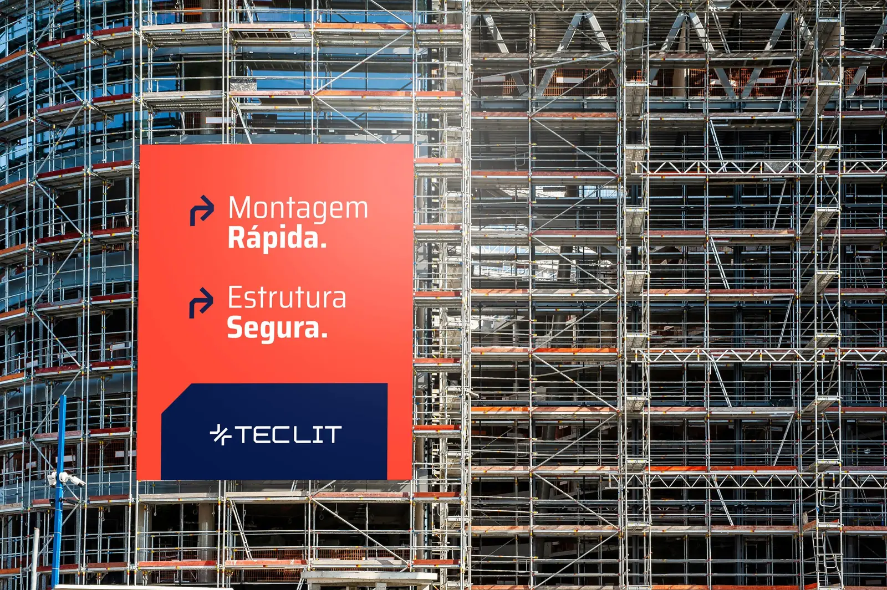
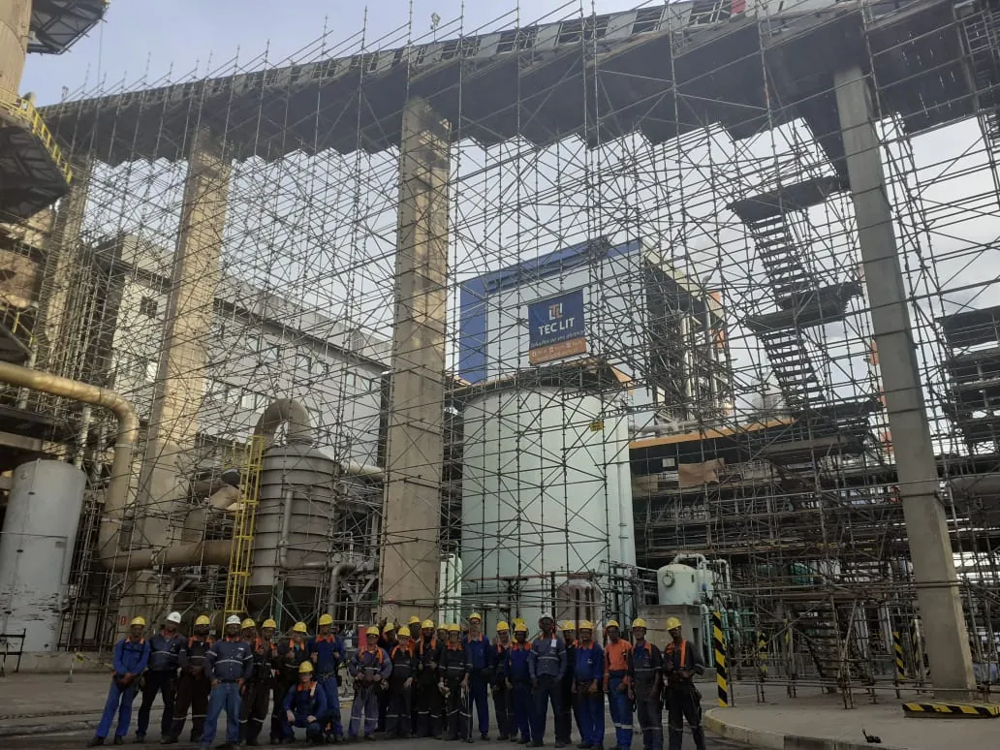

Aracruz
Litoral norte do Espírito Santo
Aracruz é a cidade onde fica a base da Tec Lit.
Área de atendimento
A locação de andaime cobre todo o estado, com material e equipe saindo da base em Aracruz. Venda e fabricação atendem também fora do Espírito Santo, porque são fornecimentos pontuais em que o transporte pesa menos no total.

Como funciona
A Tec Lit trabalha com um endereço único, em Aracruz, no Espírito Santo. É de lá que saem o material de locação, a equipe de montagem e a peça fabricada. Não existe filial, e nenhum pátio intermediário.
Na prática, o material vai para a frente de serviço e fica alocado lá enquanto durar o contrato. Para obra distante, esse formato é o que faz sentido: mobiliza o volume de uma vez, em vez de viagem curta e repetida.
A distância importa no transporte, não na capacidade de atender. O que define o orçamento é o volume de material, o tempo de permanência e o número de viagens.

Vizinhas da base
Municípios no entorno de Aracruz, atendidos sem trecho longo de rodovia.
Litoral norte do Espírito Santo
Aracruz é a cidade onde fica a base da Tec Lit.
Norte do Espírito Santo, vizinha de Aracruz
Ibiraçu é vizinha de Aracruz e fica no entroncamento da ES-257 com a BR-101.
Norte do Espírito Santo, vizinha de Aracruz
João Neiva fica no eixo que liga Aracruz ao interior norte do estado, cortada pela ferrovia e próxima da BR-101.
Litoral do Espírito Santo, entre Aracruz e a Serra
Fundão fica entre Aracruz e a Serra, no caminho do litoral.
Grande Vitória
Região metropolitana, onde ficam a maior parte da indústria e da obra vertical do estado.
Região Metropolitana da Grande Vitória
A Serra concentra a maior parte da indústria da Grande Vitória.
Capital do Espírito Santo, Região Metropolitana
Vitória junta obra portuária, prédio alto e manutenção predial em uma ilha com espaço apertado.
Região Metropolitana da Grande Vitória
Vila Velha tem duas obras diferentes convivendo no mesmo município: a orla verticalizada, cheia de prédio alto em manutenção de fachada, e a faixa industrial e portuária de Paul e Argolas, com tanque, tubulação e estrutura metálica..
Região Metropolitana da Grande Vitória
Cariacica é o nó logístico da Grande Vitória, onde a BR-101 encontra a BR-262 e a ferrovia.
Norte e noroeste
Eixo da BR-101 e vale do Rio Doce, com polo industrial, agroindústria e petróleo em terra.
Norte do Espírito Santo, no vale do Rio Doce
Linhares é o principal polo industrial do norte do estado e fica no mesmo eixo de rodovia da base da Tec Lit.
Noroeste do Espírito Santo, no vale do Rio Doce
Colatina é o centro industrial e comercial do noroeste do estado, às margens do Rio Doce.
Extremo norte do Espírito Santo
São Mateus é o polo do extremo norte capixaba, com petróleo e gás em terra, agroindústria e obra portuária.
Litoral sul
Faixa de praia verticalizada, com ciclo de manutenção de fachada puxado pela maresia.
Litoral sul do Espírito Santo
Guarapari tem obra vertical de frente para o mar e um ciclo de manutenção puxado pela maresia.
Perguntas frequentes
A locação de andaime atende todo o estado, com saída da base em Aracruz. As cidades listadas nesta página têm conteúdo próprio porque concentram a maior parte da demanda, mas obra em município vizinho a qualquer uma delas também é atendida.
Venda e fabricação sim, inclusive para outros estados, porque são fornecimentos pontuais em que o frete se dilui no volume. Locação fora do estado depende do tamanho da obra, já que o transporte pesa demais em volume pequeno. A empresa já forneceu para obras em Mariana, em São Paulo e por licitação no Paraná.
Não. É um endereço só, em Aracruz, onde ficam o galpão de fabricação, o pátio de material e a equipe. O material fica alocado na obra durante o contrato, e isso não configura filial.
Provavelmente sim. A lista reúne as cidades com demanda concentrada, não o limite do atendimento. Descreva a obra no pedido de orçamento e o comercial confirma o atendimento e o transporte.
O transporte é item separado do material e da mão de obra, e varia com o volume, a distância e o número de viagens.
[[PENDENTE: composição do orçamento, o que entra no valor padrão e o que é cobrado à parte]]
Veja também
Orçamento
Informe a cidade, o tipo de serviço, a altura e a data prevista. O retorno indica o sistema, o arranjo de montagem e o que entra no fornecimento.